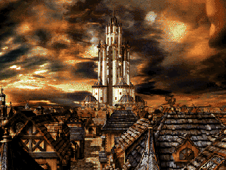

다운로드
브라우저에서 바로 하거나, 받아서 합니다. 업데이트 방법도 아래에 있습니다.
브라우저에서 바로 하기
설치 없이 PC·휴대폰 브라우저에서 합니다. 처음 한 번 게임 파일(약 82MB)을 받고, 저장하면 자동으로 백업됩니다.
로스트사가 v3.7 완결판
rm2k-lostsaga.zip · 약 56MB
바뀐 내용은 아래 릴리즈 노트나 릴리즈 페이지에서 볼 수 있습니다. 새 버전 소식은 릴리즈 피드로 받을 수 있습니다.
Windows 의 로스트사가 접속.exe 로 실행하려면 zip 의 압축을 풉니다. 안에 rm2k-lostsaga 폴더가 있고, 이 폴더가 게임입니다. EasyRPG Player 는 zip 을 풀지 않고 그대로 열 수 있습니다. EasyRPG Player 로 실행하는 것을 권장합니다. 기기에 맞는 방법을 고르세요.
EasyRPG Player 로 실행하기 (권장)
EasyRPG Player 는 RPG Maker 2000 게임을 여러 기기에서 돌려 주는 무료 프로그램입니다. 설치한 뒤 위에서 받은 zip 이나 풀어 둔 게임 폴더를 열면 됩니다. 공식 다운로드 페이지
- Windows: 공식 페이지에서 받은 zip 의 실행 파일을 켜고 게임 zip 을 열거나, 풀어 둔 게임 폴더(
rm2k-lostsaga) 안에 실행 파일을 넣고 실행합니다. - Mac: 공식 페이지의 macOS 앱을 받거나 터미널에서
brew install easyrpg-player를 한 뒤, 게임 폴더(rm2k-lostsaga) 안에서easyrpg-player를 실행합니다. - Linux: Flatpak(
org.easyrpg.player) 이나 배포판 패키지로 설치하고 게임 폴더에서 실행합니다.
Windows (로스트사가 접속.exe)
- zip 압축을 풀고
로스트사가 접속.exe를 실행합니다. - 그림이나 소리가 나오지 않으면 RPG Maker 2000 런타임 패키지(RTP)가 필요합니다. RTP 설치 파일을 받아 설치하세요.
주의 이 게임은 EasyRPG Player 기준으로 만들었습니다. 로스트사가 접속.exe 로도 마스터 승급 캐릭터가 Lv55 까지 오릅니다. 실행이 되지 않거나 느릴 때, 화면이 이상할 때는 위의 EasyRPG Player 로 실행해 주세요.
Android
- Google Play 의 EasyRPG Player 를 설치합니다.
- 받은 zip 은 풀지 않아도 됩니다. zip 파일 그대로, 또는 풀어서 나온
rm2k-lostsaga폴더를easyrpg/games/폴더 안으로 옮깁니다. 앱 첫 화면의 안내에 나오는 게임 폴더 위치를 따르세요. - EasyRPG Player 를 열고 목록에서 로스트사가를 눌러 시작합니다.
- 그림·소리가 비어 보이면 RTP 를
easyrpg/rtp/2000/에 넣어야 합니다.
화면에 십자키와 버튼이 나타나 터치로 조작할 수 있습니다. 기기와 앱 버전에 따라 폴더 위치와 메뉴 이름이 조금 다를 수 있습니다.
iPhone · iPad (iOS)
EasyRPG Player 는 앱스토어에 정식 앱이 없습니다. iOS 에서는 RetroArch 앱에 EasyRPG 코어를 받아 쓰는 방법이 있습니다.
- 앱스토어에서 RetroArch 를 설치하고, 코어 다운로드에서
EasyRPG를 받습니다. - 받은 zip 을 파일 앱의 RetroArch 폴더로 옮깁니다. 풀지 않아도 되고, 풀었다면
rm2k-lostsaga폴더를 옮깁니다. - RetroArch 에서 콘텐츠 불러오기로 zip 을 고릅니다. 폴더로 옮겼다면 폴더 안의
RPG_RT.ldb를 고릅니다.
iOS 는 설치 환경에 따라 동작이 달라 여기서는 확인하지 못했습니다. 안 되면 문의로 알려 주세요.
이미 하고 있다면 (업데이트)
- 위에서 새 zip 을 받습니다.
- zip 으로 실행하고 있다면 지금 쓰는 zip 을 새 zip 으로 바꿉니다. 폴더로 실행하고 있다면 새 zip 의 압축을 풀어 나온 파일을
rm2k-lostsaga폴더에 덮어씁니다. - 게임을 켜고 이어하기를 합니다.
세이브(Save01.lsd 같은 파일)는 zip 에 없어서 덮어써도 그대로 남습니다. 그래도 불안하면 Save 로 시작하는 파일만 따로 복사해 두세요. 이어하기가 안 되는 버전이 있을 수 있으니 릴리즈 노트도 한 번 봐 주세요. Android 는 세이브가 게임 폴더 밖에 있을 수 있어, 덮어쓰기 전에 위치를 확인하세요.
v3.7.4 2026-11-12
고친 것
- 몬스터로 진행할 때 로저스국 알리온에게서 대현자의 두루마리를 받을 수 없어 봉인의 성소로 가는 길이 막히던 문제
- 카오스의 심장과 혼돈의 왕관으로 자유의 면류관을 만들 곳이 없던 문제 (길드 2층 루카 - 강화·복원)
- 은빛 갈매기호 금고를 연 뒤 짐칸의 불빛이 바닥 물웅덩이와 구별되지 않던 문제
v3.7.3 2026-11-12
고친 것
- 해역 지도·항해 일지·해도 조각·낡은 보물지도를 펼치면 시간 아이콘과 피로도가 지도 위에 겹쳐 보이던 문제
- 해역 지도 등을 취소 키로 닫으면 메뉴 창이 같이 열리던 문제
v3.7.2 2026-11-12
고친 것
- 세계지도를 펼치면 시간 아이콘과 피로도가 지도 위에 겹쳐 보이던 문제
- 세계지도를 취소 키로 닫으면 메뉴 창이 같이 열리던 문제
v3.7.1 2026-11-12
바뀐 것
- 화면 왼쪽 아래 HP·MP 바를 새로 그렸습니다. 막대가 실제 남은 양대로 줄어듭니다
- HP·MP 바 오른쪽에 피로도가 나옵니다. 쌓일수록 얼굴 표정이 나빠지고, 40부터 노란색·80부터 빨간색 숫자로 바뀝니다
고친 것
- 장인 강화 표·세트 조합표를 취소 키로 닫으면 메뉴 창이 같이 열리던 문제
v3.7 2026-11-12
직업 스킬 정리
- 위력이 비슷해 쓸모가 겹치던 직업 스킬을 정리했습니다 (게일 애로우·폭풍의 시위·정령검 계열·헤븐즈 도어·퇴마의 빛·망자의 행진·호접몽 등)
- 새 스킬: 카이져 굉음 내려치기(2차), 루이체 세라핌의 날개(마스터)
- 카이져 스톰 블레이드·하사드 스켈레톤 헤드가 마스터 전용으로 세졌습니다
- 이미 승급한 캐릭터는 개편의 스크롤로 받습니다
- 근위기사단·드레인 핸드·다크 플레임을 올렸습니다. 어둠·신성 마무리기는 어둠·신성에 강한 보스에게도 들어갑니다
- EasyRPG Player·웹판: 데미지 999 상한이 없어지고, 스킬에도 치명타가 나옵니다
상태이상
- 새 상태이상: 화상(공격 반감)·출혈(방어 반감)·석화(행동불가), 침식·공포·봉쇄
- 중독은 턴마다 최대 HP 3%+20 이 닳고, 해독할 때까지 남습니다 (걸을 때도 HP 가 닳습니다)
- 출혈은 HP 회복약·회복 기술로 멎습니다. 상태이상 회복 약·기술은 새 상태이상도 풉니다
- 베기·이빨 기술과 무기는 출혈, 인페르노·다크 플레임은 화상, 스톤 커스·메두사의 눈빛은 석화를 겁니다
- 보스에게는 지속 피해가 덜 들어갑니다
장인
- 나노무토·마나무토의 강화·세트 제작이 표로 바뀌었습니다
- 강화 표: 가진 장비만 보이고, 장착한 채로 강화합니다
- 세트 조합표: 사냥터별로 재료와 가진 개수를 보고, 만들 수 있는 장비에 ● 가 붙습니다
- 장인에게 처음 말을 걸면 재료 수첩을 줍니다 (어디서나 조합표를 볼 수 있습니다)
- 강화하거나 만들 수 있으면 장인 머리 위에 망치가 뜹니다
- 세트 장비에 이름이 붙었습니다 (은십자·백야·순례자·드라이어드·추종자·거신·묘지기·월식·망국·대족장)
바뀐 것
- 아이템 이름 앞 아이콘을 종류별로 맞췄습니다 (회복·능력치·주문서·재료·중요 물건·쓰는 물건)
- 루시리스 여신상 퀘스트 표시를 새로 그렸습니다
- 받을 수 없는 직업에게는 지르리나·루시리스 여신상 퀘스트 표시가 뜨지 않습니다
고친 것
- 인어의 눈물·바다거북 등딱지 등 "~방지" 방어구 9개가 실제로는 막지 못하던 문제
- 군주 제왕의 위엄·폭군의 칙령 피해가 반만 들어가던 문제
- 로저스 초밥 장인 이두용, 북쪽 필드 메히 대사 맞춤법
- 칠리마을 승급소 마스터 창구 직원 자리
v3.6.2 2026-11-12
고친 것
- 결계행 비행선에서 내리면 이동속도가 느려지던 문제
- 데빌랜드 오크의 육수 퀘스트가 진행되지 않던 문제 (오크에게 말을 걸어도 됩니다)
- 오크의 육수 등 일부 퀘스트를 처음 마쳐도 반복 보상이 나오던 문제
- 건물공사를 시작하면 석장이 델카, 동물농장 사육사 미나가 사라지던 문제
- 드래곤 높이 날기로 크리엔드 지붕 위 상자를 열면 게임이 끝나던 문제
- 드래곤 높이 날기로 사냥터에 들어가면 몬스터·문을 지나치던 문제 (사냥터에 들어가면 내려옵니다)
- 몬스터 승급 때 쉐도우 대사가 끊기던 문제
바뀐 것
- 바실리스크·데빌메두사의 리커버리타임즈마법서 드롭 10%→30%
- 데빌랜드 물약상점에서 부활의 꽃가루 뭉치를 팝니다
- 로저스 마법 상인: 엘리멘탈오브電 설명에 능력치를 적고, 두 번 있던 땅 오브를 뺐습니다
- 오크의 뼈는 팔 수 없습니다
v3.6.1 2026-11-08
고친 것
- 제련술에서 "계속 제련한다"를 골라도 제련이 끝나던 문제
- 최도수 돋보기 심부름 대사 맞춤법
- 우편소 구인 게시판 "배달한 임시직"을 "배달할 임시직"으로
v3.6 2026-11-08
아이템 개편
- 사냥터 10곳에 테마 장비 100종이 생겼습니다 (본토던전·얼음성·신의 성지·그랜드마운틴·광기의 던전·골렘 던전·지하던전·마왕의 침소·고대던전·그랜드마운틴 던전)
- 사냥터에서 전투를 이기면 가끔 상자가 열리며 매직·레어 장비가 나옵니다
- 장인 나노무토·마나무토가 사냥터 재료로 세트 장비를 만들어 줍니다. 두 벌·세 벌을 함께 끼면 세트 효과가 붙습니다
- 새 유니크 청룡언월도(오우거 리더)·야른그레이프(골렘 투사 리더). 장인에게서 +4까지 강화할 수 있습니다
- 폴암·건틀릿·화살처럼 상위 장비가 모자라던 계열을 채웠습니다
- 상점 장비 성능을 값에 맞게 고쳤습니다 (원소 반지·오브·단검·검·로브 등). 상점 창은 치명·공격을 낮췄습니다
- 워리어 성장(Lv55 HP 800·방어 200)과 오리하루콘 소드 공격력, 외항 장비 성능을 올렸습니다
- 중독은 3턴 동안 최대 HP의 5%씩 닳습니다
- 크랩리더 드롭 66%→10%, 로저스 투구 방어 20→26, 이순신 투구는 조금 낮췄습니다
- 장비 설명을 "짧은 설명. 능력치"로 맞추고, 실제 능력치와 다르던 설명을 고쳤습니다
영지·신시가지
- 크리엔드 신시가지의 시장·경비대·신전·황제 동상, 영주 영지의 경비대 그림을 새로 그렸습니다
- 건물을 짓고 허물 때 연출이 나오고, 모자란 재료와 허무는 비용을 알려 줍니다
Windows
로스트사가 접속.exe로 해도 마스터 승급 캐릭터가 Lv55 까지 오릅니다
바뀐 것
- 마법할머니 워프: 그라나마을이 '다른지역' 목록 넷째 칸으로 들어갔습니다
- 플레이스 웨폰·아머·매직·무브 법서는 쓰면 사라집니다
- 건물공사를 시작할 때 델카가 일찍 마치는 법을 알려 줍니다
고친 것
- 에피소드2 전에는 장비 세트 효과가 붙지 않던 문제
- 마을 증축(50만 이드)이 되지 않던 문제
- 도둑맞은 돈, 금고·국고에서 받은 돈이 사라지던 문제
- 영지 순찰병이 막혀 서 있던 문제
- 칠리마을 의뢰소 관리원이 가입할 때 "크리엔드의뢰소"라고 하던 문제
- 크리엔드 동상 앞 처녀 대사 맞춤법, "실명증"을 주민증으로
- 보상·참가비·여관 값의 "골드"를 "이드"로
- 대석 넉클이 민첩을 올리던 문제 (설명대로 방어 7)
- +1 활빈검·+3 묠니르·+4 골드 파이터 넉클의 능력치가 강화 단계 순서와 맞지 않던 문제
v3.5.12 2026-11-08
고친 것
- 이계의 틈에 들어갈 때마다 라그엘이 같은 설명을 처음부터 다시 하던 문제
- 광기의 던전 녹음 장치의 두 번째 기록이 나오지 않던 문제
v3.5.11 2026-11-08
고친 것
- 우라노스와 싸우기 전에 같은 대사가 여러 번 나오던 문제
- 퀘스트 게시판 보스 토벌 의뢰 안내에 같은 문장이 여러 번 붙어 나오던 문제
- 번개의 낙인·물의 낙인을 쓰면 "불의 낙인"으로 나오던 문제
- 둠 나이트 소환과 데몬소환의 사용 문구가 서로 바뀌어 있던 문제
- 쇠락의 안개를 쓰면 "영혼의 방벽"으로 나오던 문제 등 기술 문구·설명 수치
바뀐 것
- 가디언 프리스트(릴리)가 36레벨에 미니멈 쉴드 대신 디펜스업을 배웁니다. 이미 36레벨을 넘겼다면 본토 행정건물 헨슨에게 "제 가디언이 못배운 스킬이 있어요"를 고르면 바뀝니다
v3.5.10 2026-11-05
고친 것
- 해적 소굴 동굴에서 순찰 해적에게 들켜 싸우면 이겨도 해적섬 전투 맵을 나갈 수 없던 문제
- 외항 섬 전투에서 지면 막힌 남쪽 부두로 돌아가던 문제 (이제 외항선 선장 앞으로 돌아갑니다)
바뀐 것
- 칠리 마법사 길드 2층에 루카가 없을 때도 책 더미를 조사하면 해도 조각을 얻을 수 있습니다
v3.5.9 2026-11-05
바뀐 것
- 외항선 선장이 아직 못 찾은 해도 조각의 소문을 알려 줍니다
- 외항선 선장과 처음 이야기하기 전에도 배 목수와 수상한 선원이 선착장에 있습니다
- 외항선 선장·배 목수·수상한 선원의 말투를 바꿨습니다
v3.5.8 2026-11-05
바뀐 것
- 해도 조각을 파는 수상한 선원이 로저스국 선착장에서 본토 선착장 짐터로 자리를 옮겼습니다
v3.5.7 2026-11-05
고친 것
- 외항선 선장에게 갈 수 없어 외항 항해를 시작할 수 없던 문제
바뀐 것
- 본토 선착장 섬에 동쪽 부두와 짐터를 새로 만들었습니다. 외항선 선장과 배 목수는 이 부두에 있습니다
- 외항 출항은 본토 선착장에서만 합니다
v3.5.6 2026-11-05
고친 것
- 대사와 아이템 이름 여러 곳에서 글자가 깨져 보이던 문제
- 토너먼트전 서버 선택 화면이 옛 그림으로 나오고 글자가 잘 안 보이던 문제
바뀐 것
- 무한대전 접속·루시리스 서버·다크네스 서버 화면을 새로 그렸습니다
- 크리엔드·칠리마을·로저스국 상점에서 그 마을 이동주문서를 팝니다
- 로저스국 상점은 붕괴된 실프의 꽃잎을 더 팔지 않습니다
v3.5.5 2026-11-05
고친 것
- 크라켄 레이드 시작 때 배 밑을 지나가는 그림자가 갑판 위까지 덮이던 문제
v3.5.4 2026-11-05
고친 것
- 해적선이 주인공을 따라 움직여 갑판에 겹쳐 보이던 문제 (이제 뱃전 옆 바다에 떠 있습니다)
v3.5.3 2026-11-05
고친 것
- 유령 선장과 싸울 때 해골 선원이 나오지 않던 문제
- 크라켄이 심연의 들숨을 쓰지 않고 턴을 넘기던 문제 (이제 들숨 다음 턴에 해일이 옵니다)
- 크라켄 레이드에서 졌을 때 남은 체력이 실제와 다르게 나오던 문제
- 마나무토 강화 중 갑각 써클렛이 잘못 나올 수 있던 문제
- 물때·크라켄 레이드 중에 소환하면 남은 시간이 처음으로 돌아가던 문제 (이제 그동안은 소환할 수 없습니다)
- 우편물 배달 중에 출항하면 우편물 기한이 지나 버리던 문제
- 물시계탑에서 밤을 보낸 뒤 다른 곳에서 새벽을 맞으면 물때가 시작되던 문제
v3.5.2 2026-11-05
외항 항해
- 선착장의 외항선 선장·배 목수·수상한 선원과 해적 소굴 문지기 자리를 고쳤습니다
v3.5.1 2026-11-05
외항 항해
- 외항선 선장·선원·붉은수염·해적 졸개·수상한 선원·포수장의 걷기 그림을 새로 그렸습니다
- 해역도에서 가라앉은 해안의 자리를 옮겼습니다
v3.5 2026-11-05
외항 항해
- 본토·칠리마을·로저스국 선착장에 외항선 선장이 생겼습니다. 찢어진 해도 조각을 모으면 먼바다의 섬으로 나갈 수 있습니다
- 야자섬·난파선 암초·꺼진 등대섬·떨어진 하늘섬·해적 소굴: 섬마다 보물을 찾는 방법과 보스가 다릅니다
- 안개 해역의 유령선, 썰물 때만 드러나는 침몰 도시, 크라켄 레이드가 이어집니다
- 낮에 항해하면 해적선이 따라붙습니다. 포탄을 날라 대포로 맞히세요
- 낡은 보물지도를 펼쳐 X 표시를 삽으로 파면 보물이 나옵니다
- 선착장의 배 목수가 섬 재료로 항해사 세트·선장 세트를 만들어 줍니다
- 매직·레어 장비가 섬 몬스터와 보물지도에서 나옵니다
웹판
- 랭킹에 크라켄 탭이 생겼습니다 (크라켄을 가장 빨리 잡은 순)
고친 것
- 세계지도를 쓰면 바로 닫히던 문제
- 전투 맵에서 한 마리를 이긴 뒤 남은 몬스터가 다시 전투를 걸던 문제 (고대의 하늘 등 7곳)
- 본토던전 3층 라이칸스로프 리더 무리에 빈 자리가 있던 문제
- 무한 웨이브가 시간 초과로 끝나면 대기실로 돌아가지 못하던 문제
- 잡은 뒤에도 필드 몬스터가 계속 다시 나오던 곳 14곳
- 오아시스 건물 입구·사막 전투 맵 출구 위치, 가디언 클레릭 장비 착용
v3.4.2 2026-11-03
신대륙 사막
- 사막 건물·사막신전의 검은 구역·둥근 흙집 지붕·돌기둥 윗칸을 지나갈 수 있던 문제
- 오아시스와 오아시스 안 건물에서 저장할 수 있습니다
이동
- 오아시스 이동주문서가 생겼습니다. 오아시스 상인이 팝니다
- 그라나 이동주문서를 그라나마을 상점에서 팝니다
- 그라나마을에 한 번 다녀온 뒤에는 마법할머니(본토·칠리마을·로저스국)가 그라나마을로도 텔레포트해 줍니다 (150 이드)
v3.4.1 2026-11-03
화면
- 맵을 옮기면 낮·밤 시간 아이콘이 사라지고 한참 뒤에야 다시 뜨던 문제
v3.4 2026-11-03
신대륙 사막
- 메마른땅·부서진전장·오아시스를 새로 꾸몄습니다. 오아시스는 여관·신대륙길드 지부·장인 작업장·집이 있는 마을이 되었고, 여관에서는 열쇠를 사서 객실에서 쉽니다.
- 오아시스와 사막신전 사이에 사막신전앞 맵이 생겼습니다. 사막신전 안 바닥과 벽을 정리했습니다.
- 사막 전투 맵에서 몬스터가 바로 옆에서 시작하던 것을 다른 전투 맵처럼 떨어뜨렸습니다.
전투
- 반란군기지·본토던전·마왕의침소 전투 맵에서 몬스터 마릿수가 자리와 맞지 않던 문제
- 마왕의침소 전투 맵에서 한 마리를 이긴 뒤 남은 매드울프가 다시 전투를 걸던 문제
화면·그래픽
- 화면 오른쪽 위에 낮·밤 시간 아이콘과 차오르는 막대가 뜹니다.
- 빈 상자는 대화창 대신 왼쪽 위 쪽지로 알립니다. 보스 등장 카드는 가운데에서 나타났다 사라집니다.
- 장비 등급 표기를 한 글자로 바꿨습니다: 제작 [Ｃ], 매직 [Ｅ]
- 폭주한 워울프·머맨·자칼 전사·미라 전사·켈베로스 걷기 그림과 아지트 가구 그림을 다듬었습니다.
기타
- 히어로소프트 건물에 방 4곳(개발실·서버실·기획실·운영진 자리)과 기념품 2개
- 유니콘의 뿔 의뢰 대사 맞춤법
웹판
- 런처를 홈 화면·바탕화면에 앱으로 설치할 수 있습니다.
- 옛 세이브를 불러올 때 예전 알림 연출이 남던 문제
v3.3 2026-11-02
엔딩·마지막 구간
- 혼돈의 땅·혼돈의 왕좌와 마왕성(회랑·힘의 방·기억의 방·지배의 방·빈 왕좌) 맵을 새 그림으로 다시 그렸습니다.
- 별의 자리: 전용 음악, "자유의 신" 칭호 카드, 새 엔딩 연출 「그 방」, 아래에서 위로 흘러가는 엔딩 크레딧.
- 엔딩 크레딧이 까만 화면에서 멈춘 것처럼 보이던 문제.
- 카오스·마왕성 장면의 대사와 연출을 다듬었습니다.
전투
- 전투 맵 시작 연출 개편: 적들의 기습 때 주인공 머리 위에 "!" 가 뜨는 순간 결정키를 누르면 피할 수 있습니다. 기습 확률 10% → 5%.
- 보스 출현 경고 카드, 승리·패배 카드.
맵·그래픽
- 지하호수(1층·깊은 곳·호수의 주인 둥지)와 고대의 하늘·하늘의 계단, 그 전투 맵을 다시 그렸습니다.
- 화면 위 안내말을 양피지 두루마리와 지역 이름 카드로 바꿔 밝은 곳에서도 읽힙니다.
- 아이템을 얻으면 화면 왼쪽 위에 획득 쪽지가 뜨고 바로 움직일 수 있습니다. 직업 승급 때 칭호 카드가 뜹니다.
- 몬스터 걷기 그림 8종을 전투 그림에 맞췄습니다 (혼돈의 땅·봉인의 빙묘 몬스터, 호수 크라켄, 랜드 드래곤).
음악
- 새 지역 맵마다 전용 배경음악 20곡과 칠리마을 곡.
- 카르도어전 전투 음악. 카르도어전·카오스전 뒤에는 "전투음악 변경"에서 고른 곡으로 돌아갑니다 (이전에 과거·여름용을 골라 둔 세이브는 다음 보스전 뒤 한 번 기본 곡이 되니 다시 골라 주세요).
시스템
- 야영: 장작·거대장작을 필드 메뉴에서 쓰면 밤에 그 자리에서 쉽니다. 요정은 장작 없이 숲의 쉼터(2차 승급 뒤 정령의 쉼터).
- 포션조합술: 재료 보유 수와 만들 수 있는 개수를 보여 주고 1개 만들기·모두 만들기. 마나포션 재료 오류 수정, 헤비·풀힐링포션 재료 3개.
- 아르바이트: 건물공사·동물농장은 도중에 마칠 수 있습니다. 식당청소 주방장이 배고플 때 밥을 줍니다.
v3.2.3 2026-11-01
그래픽
- 필드 몬스터 걷기 그림을 원작 그림체에 더 가깝게 다시 그렸습니다 (트롤, 골렘 사냥개, 사막 거인, 서리 우마로, 서리 트롤, 바실리스크, 아누비스, 미라 사제, 실험체 ZT 등).
- 필드 그림이 전투 그림과 달랐던 몬스터를 전투 그림에 맞췄습니다 (거대 벌·거대 거미, 광기의 토끼·광기의 오크, 나이트메어, 데스 팔라딘, 저주받은 엔트, 크라켄나이트, 다크 정령).
아이템
- 슈퍼유니크상자에서 고대 마법서가 나오지 않던 문제.
- 반란군기지 등 획득 메시지가 없던 상자에서 받은 아이템을 알려 줍니다.
- 파워·인트·덱스·디펜 포인트 상자 문구가 받은 아이템 이름으로 나오고, 아이템 설명이 생겼습니다.
- 광산헬멧·농부모자·앞치마·목장갑·팔목보호대: 해당 아르바이트 정산 때 가지고 있으면 수익 +20%, 유명도 +1.
- 팔목보호대를 일반 상자에서 얻을 수 있습니다.
- 동물사냥 실패 정산 문구가 다른 유명도를 보여 주던 문제.
- 주문서·장신구 등 상자 아이템 설명을 정리했습니다.
v3.2.2 2026-11-01
버그 수정
- 필드 몬스터와 부딪혀 전투 맵에 들어간 직후 "적들의 기습" 때 캐릭터가 굳어, 몬스터가 닿아도 전투가 안 되고 움직일 수도 없던 문제.
- 버그 해결용 아이템을 써도 굳은 캐릭터가 풀리지 않던 문제. 쓸 때마다 한 번씩 풀어 주고, 다시 굳으면 또 쓸 수 있습니다.
- 혼돈의 땅 라그엘 장면에서 천사와 혼돈의 군세 머리가 벽에 가려 보이던 문제.
그래픽
- 필드 몬스터 걷기 그림을 전투 그림에 맞춰 다시 그렸습니다 (골렘 사냥개, 매드 캣, 켈베로스, 머미, 트롤, 바실리스크, 신대륙·사막·지하 호수 몬스터 등).
- 대현자의 수호 골렘 전투 그림을 다시 그렸습니다.
맵 정리
- 본토서쪽필드, 요정족필드, 우라노스섬, 서쪽늪 등에 반쪽만 놓인 나무와 떨어진 조각을 지웠습니다.
- 메마른 땅, 옛 칠리 왕국 폐허, 사막신전, 봉인의 빙묘, 혼돈의 왕좌에서 잘려 보이던 바위·지붕·수정 등을 고쳤습니다.
v3.2.1 2026-11-01
버그 수정
- 본토 동쪽 필드의 거대 벌이 검은 네모를 달고 돌아다니던 문제.
- 전사길드의뢰소의 기사 둘레에 초록 네모가 보이던 문제.
조정
- 요정의 네츄럴 오버케임: 위력 999 → 540, 명중 50 → 90, SP 250 → 100. 잘 맞고 마나를 덜 씁니다.
v3.2 2026-11-01
퀘스트
- 퀘스트를 줄 사람 머리 위에 양피지 표시가 뜹니다. 받을 수 있으면 붉은 느낌표, 완료할 수 있으면 초록 체크입니다.
- 퀘스트를 받으면 "퀘스트를 받았다." 와 효과음, 끝내면 퀘스트 이름 배너와 보상·경험치 창이 나옵니다.
- 지역 퀘스트는 모두 경험치를 줍니다(레벨에 비례). 직업 퀘스트는 그 3배, 쿼바디스 도미네는 완료 때 경험치 6000.
- 닌자 퀘스트 설명을 다시 들으면 진행 중 아이콘이 쌓이던 문제, 레인으로 클레릭 퀘스트를 받으면 진행 아이콘이 안 뜨고 O.X 퀴즈가 막히던 문제, 이숍 이야기에서 특정 답을 고르면 보상을 못 받던 문제, 다크 아르카나 2단계 연출이 엉뚱한 곳에 나오던 문제를 고쳤습니다.
버그 수정
- 크리엔드 갑옷상인의 폴리지 브레스트·골든 메일 등을 군주가 못 입던 문제. 원작에서 입을 수 있던 장비를 다시 입을 수 있습니다 (군주, 헬케스트, 용병).
- O.X 퀴즈를 전부 맞힌 뒤 아르바이트가 "중요한 퀘스트 수행중입니다" 로 막히고 소환이 안 되던 문제. 이미 막힌 세이브는 로저스 중앙광장 히어로소프트 > 버그안내소 > NEXT > NEXT > O.X퀴즈로 인한 버그 로 풀 수 있습니다.
v3.1.2 2026-11-01
- 웹판에서 업데이트 전에 시작한 세이브는 버그 해결용 아이템을 써도 이동속도가 느려지던 문제. 아이템을 한 번 쓰면 원래 속도로 돌아옵니다.
- 드래곤마스터가 각성한 뒤 버그 해결용 아이템을 쓰면 이동속도가 느려지던 문제.
v3.1.1 2026-10-31
- 캐릭터 선택 화면: 직업마다 큰 초상화와 컨셉, 진영·시작지, 설명, Lv1 능력치를 보여 줍니다. 설명은 남녀 성장 방향에 맞춰 나눴습니다.
- 선택 화면 앞의 HOW to HERO 연출을 빼고, 안내 다음에 바로 선택 화면이 나옵니다.
v3.1 2026-10-31
새 모드: 무한 웨이브
- 다크네스서버 몬스터대기실 > 무한대전장에서 들어갑니다. 소환진에서 나오는 적을 웨이브마다 제한 시간 안에 물리치고, 막아 낸 웨이브마다 캐쉬 2 를 받습니다.
- 9웨이브부터 심연·공허의 적, 29웨이브부터 혼돈의 적이 무리 지어 나오고, 50웨이브부터 제한 시간이 점점 줄어듭니다.
- 무한 웨이브의 적은 아이템을 떨어뜨리지 않습니다. 기존 무한대전은 그대로입니다.
아이템
- 마법상점 질리온: 원작 마법사 건틀릿 7종(매직·메지션·레지스트·포즌타지·건틀릿·마법강화·전투력강화)을 다시 팝니다. 가격은 원작보다 약 30% 낮췄습니다.
- 지금까지 팔던 건틀릿 7종도 같은 상점에서 계속 팝니다. 마법사용 양손 건틀릿으로 능력치를 다시 잡았고, 첫 번째는 이름을 견습 건틀릿으로 바꿨습니다.
- 포이즌대거(중독 15%)와 최상급 엘리멘탈오브電 복구.
버그 수정
- 버그 해결용 아이템(굳는 버그 해결)을 쓰면 이동속도가 느려지던 문제. 이미 느려졌다면 아이템을 한 번 더 쓰면 돌아옵니다.
- 요정족숲에 처음 가면 창 배경이 모자이크로 깨져 보이던 문제. 이미 이렇게 된 세이브는 옵션 > 시스템 옵션 > 시스템 변경 > 기본 시스템으로 돌아옵니다.
- 알바 게시판에서 같은 날 쪽지를 계속 받을 수 있던 문제. 쪽지는 하루에 한 번, 다음 날 아침에 다시 받을 수 있습니다.
웹판
- 브라우저에서 바로 하는 웹판. 저장하면 자동으로 백업되고, 대표 캐릭터를 정해 성장·모험·무한 웨이브 랭킹에 오를 수 있습니다.
v3.0.1 2026-10-30
- 몬스터 마스터 승급자 레벨 상한 Lv55 (EasyRPG Player 전용.
로스트사가 접속.exe는 Lv50, HP·MP·능력치 999 가 상한). - 무한의 스크롤: 두 엔진 모두 대응.
- 전투에서 지면 파티 회복을 먼저 하고, 죽음 안내 문구를 통일.
v3.0 완결판 2026-10-28
이야기
- 파트5 에피소드2 「고대의 하늘과 마법사의 대륙」, 에피소드3 「자유의 신」(엔딩) 추가. 엔딩 뒤에도 계속 플레이할 수 있습니다.
- 몬스터 편 「빈 왕좌」: 몬스터로 시작해 몬스터 마스터 시련을 거쳐 파트5 에 합류.
- 로그오브랜드 무덤 유령 결말, 재판소 젠앙 재판 결말.
직업
- 직업마다 남녀 승급 분기, 새 승급 스킬 58개와 전용 전투 애니메이션. 승급할 때마다 외형이 바뀝니다 (12개 직업).
- 직업 유산 퀘스트 (직업마다 하나, 몬스터는 「발록신전」). 몬스터 마스터 +4 무기 전용 스킬 3종.
던전·퀘스트·아이템
- 그랜드마운틴 지하호수(25~30 레벨), 다크네스 서버 퀘스트 게시판(일일 퀘스트), 크리엔드 신시가지·영지 마을, 아지트 꾸미기.
- 아르바이트 5종, 요리술 고기류·채소류, 의뢰소 길드랭킹.
- 세계지도, 원소 투구, 렌디 특수 제작, 에피소드2 장비 수치 재조정.
- 엔딩 뒤 요정족숲 옛 신전의 이계의 틈: 사흘에 한 번 다른 별의 신(베히모스·레비아탄·지즈)과 싸워 신급 장비를 얻습니다.
밸런스·기타
- 캐시 획득량 두 배, 아이스볼트·라이트닝 마법서 드롭 추가.
- 전투에서 지면 가까운 마을에서 패널티 없이 되살아납니다.
- RTP 를 따로 설치하지 않아도 실행, 2.85g 패치 반영, 카페에 올라온 버그 수정, 몬스터 그림·벽 이음새 정리.
이전 버전은 릴리즈 목록에 있습니다. 게임 폴더의 에피소드 업데이트 사항.txt 에도 같은 내용이 있습니다.